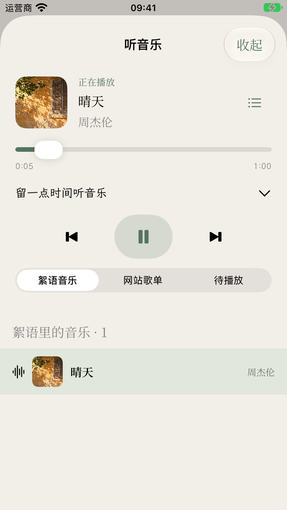

歌单与悬浮播放器
2026-10-24，375pt 模拟器实际运行截图。歌单、封面与音频使用测试夹具，音频为本地静音 WAV；随机歌单截图展示一次随机选取的结果。外部视频已直接创建 WKWebView，没有额外的“播放视频”入口，但截图与界面测试不能证明 Bilibili / YouTube 的线上播放可用性。本轮修改尚未上传 TestFlight。
顺序歌单：显示第二首的歌曲名、歌手、封面，可横向滑动。
随机歌单：进入后显示一首随机选中的已返回歌曲，不自动发声。
随笔页：左下角原生玻璃封面按钮，与写随笔同一水平。
絮语页：复用同一个播放器，封面播放时旋转。

点击封面展开播放控制器，保留进度、播放模式、歌词与队列。